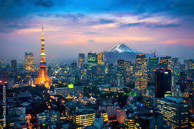

Tokyo, officially the Tokyo Metropolis, is the capital and most populous city in Japan. With a population of over 14 million in the city proper in 2023, it is one of the most populous urban areas in the world. The Greater Tokyo Area, which includes Tokyo and parts of six neighboring prefectures, is the most populous metropolitan area in the world, with 41 million residents as of 2024.
I love Tokyo because it offers a unique blend of old and new, with a mix of futuristic technology and ancient traditions. Its appeal also comes from its incredible food scene, diverse neighborhoods, vibrant pop culture, and efficient public transportation, making it a city that is both exciting and easy to navigate.
